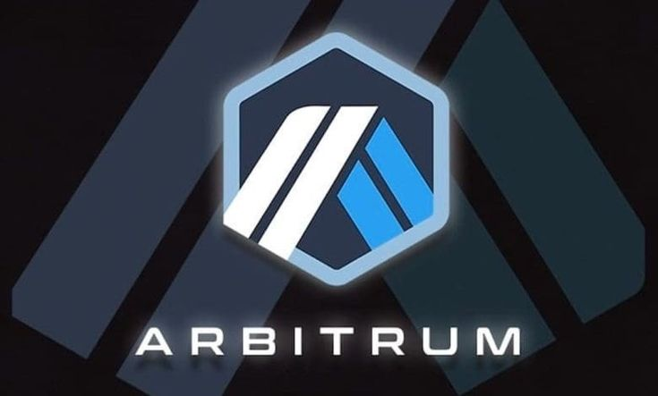
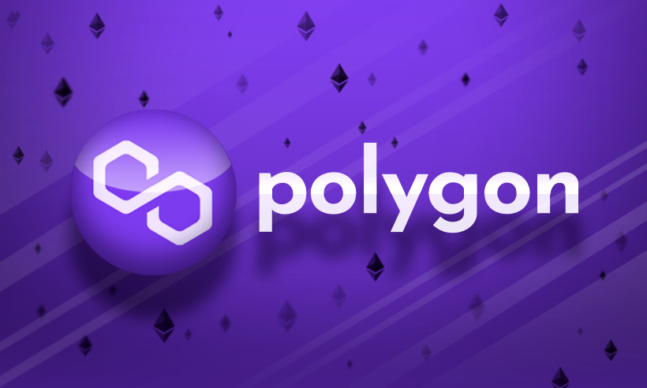

Layer 2
Ya sabemos que la blockchain de Bitcoin y Ethereum son súper seguras, pero lentas y volverse muy costosa cuando hay mucha demanda. Por eso se crearon redes de capa 2 (L2)
L2 de Bitcoin
- Lightning Network
Es un protocolo de canales de pago off-chain (fuera de la cadena) enfocado exclusivamente en hacer que Bitcoin sea rápido y barato de transferir.
Lightning es puramente de capa 2 (solo usa BTC) por lo que no tiene y no necesita un token propio
Dos personas abren un "canal de pago" enviando fondos a una cuenta compartida en la
blockchain principal. Una vez abierto, pueden intercambiar miles de transacciones al
instante y por fracciones de centavo. Al terminar, cierran el canal y solo registran
el saldo final en la red de Bitcoin.
Casos de uso ideal: Pagar un cafecito, enviar propinas, microtransacciones comerciales e
intercambios cotidianos instantáneos.
- Stacks (STX)
Stack permite ejecutar contratos inteligentes y aplicaciones dApps vinculando su
estado directamente a Bitcoin.
RSK es una cadena lateral (sidechain) que corre en paralelo a Bitcoin.
Tiene su propio token llamado rBTC que tiene el mismo valor que la BTC. 1rBTC = 1BTC.
¿Entonces porqué se creó la rBTC si tiene el mismo valor que la BTC?
Se usa rBTC porque la red de Bitcoin original no entiende las instrucciones complejas del código de Ethereum (EVM),
así que necesitas usar ese BTC "empaquetado" para pagar el gas y ejecutar las operaciones dentro de RSK.
¿Cómo funciona?
1. Utiliza un consenso propio llamado PoX (Proof of Transfer / Prueba de Transferencia).
Los mineros transfieren BTC real para competir por tener tokens STX.
2. Los titulares de STX pueden hacer "Stacking" (bloquear sus STX) para ayudar a
validar la red y recibir recompensas directamente en BTC.
Caso de uso ideal: Creación de NFTs nativos vinculados a Bitcoin, plataformas DeFi
complejas y aplicaciones descentralizadas (dApps) con tokens propios.
- Rootstock (RSK)
Es una sidechain (cadena lateral) conectada a Bitcoin que trae la compatibilidad
de Ethereum a la red de Bitcoin. Stacks es el caso donde sí existe un token nativo propio (STX)
ya que tiene sus propios validadores por lo que necesita el token STX para pagarle a sus mineros y recompensar a los
usuarios con BTC
¿Cómo funciona?
1. Utiliza un puente (llamado Powpeg) donde bloqueas BTC en la red principal para
recibir rBTC (un token pegado 1:1 con Bitcoin) en Rootstock.
2. Su mayor ventaja es que es compatible con la EVM (Ethereum Virtual Machine).
Esto significa que los desarrolladores pueden migrar aplicaciones de Ethereum
(DeFi, préstamos, NFTs) a Bitcoin.
3. Se asegura mediante Merged Mining (los mismos mineros de Bitcoin procesan los
bloques de RSK al mismo tiempo).
Caso de uso ideal: Aplicaciones DeFi (préstamos, intercambios descentralizados)
usando Bitcoin respaldado 1:1 como colateral.
L2 de Ethereum
- Arbitrum One
Agrupa miles de transacciones fuera de la red principal de Ethereum y envía una sola prueba simplificada a Ethereum.
Utiliza un enfoque "optimista": asume que todas las transacciones son válidas a menos que alguien presente una prueba
de fraude dentro de una ventana de tiempo (unos 7 días para retiros a Ethereum mainnet).
Si buscas intercambios complejos, préstamos o trading con apalancamiento descentralizado, Arbitrum es una referencia principal.

- Base
Base aprovecha la infraestructura de Optimism (OP Stack) para brindar transacciones ultra rápidas e integrarse de manera fluida con el ecosistema de Coinbase.
Su facilidad de entrada desde la app de Coinbase y pasarelas de pago tradicionales hace que la experiencia de usuario sea muy parecida a usar una app de banco normal.
- OP Mainnet (Optimism)
Al igual que Arbitrum, utiliza Optimistic Rollups para procesar transacciones rápido y barato. Sin embargo, la gran visión de Optimism es la creación de la Superchain: un estándar de código abierto (llamado OP Stack) que permite a cualquiera lanzar su propia Layer 2 interoperable.
Lo chevere de OP Stack es que su código se ha convertido en el estándar de la industria; de hecho, muchas otras L2 (incluyendo Base) están construidas sobre la tecnología de Optimism.
- Polygon (PoS / zkEVM)
A diferencia de Arbitrum, OP Mainnet y Base (que son L2 puras que dependen directamente del consenso de Ethereum para su seguridad), Polygon PoS es una blockchain independiente que corre en paralelo a Ethereum. Tiene sus propios validadores que aseguran la red mediante un consenso Proof-of-Stake y se comunica con Ethereum mediante puentes (bridges).

Se enfoca en pagos rápidos, juegos (Gaming Web3), marcas comerciales masivas (Starbucks, Nike, Reddit) e integración con plataformas tradicionales.
¿Y las demás redes L1?
Filosóficamente Solana, BNB Chain, Tron, Avalanche, etc no necesitan una L2 pero han ido adaptando modelos similares.
- Solana: No tiene ya que la filosofía central de Solana es escalar todo en la L1. Sus creadores argumentan que
fragmentar la liquidez en capas secundarias, como Ethereum, destruye la experiencia de usuario. Como su L1 ya procesa
miles de transacciones por segundo con muy bajos costos, no ha sido necesario crear L2s tradicionales.
- BNB Chain: Sí tiene. Crearon opBNB, una L2 basada en el OP Stack (tecnología de Optimism). A pesar de que BNB
Chain ya es bastante rápida y barata, lanzaron esta L2 para aplicaciones masivas como juegos web3 o SocialFi
que requieren millones de microtransacciones diarias sin saturar la red principal.
- Avalanche: Sí y no xd. Avalanche usa un modelo distinto llamado Subnets (Subredes).
En lugar de hacer rollups tradicionales como Ethereum, Avalanche permite que cualquiera cree su propia blockchain
secundaria e independiente (Subnet) conectada a la red principal.